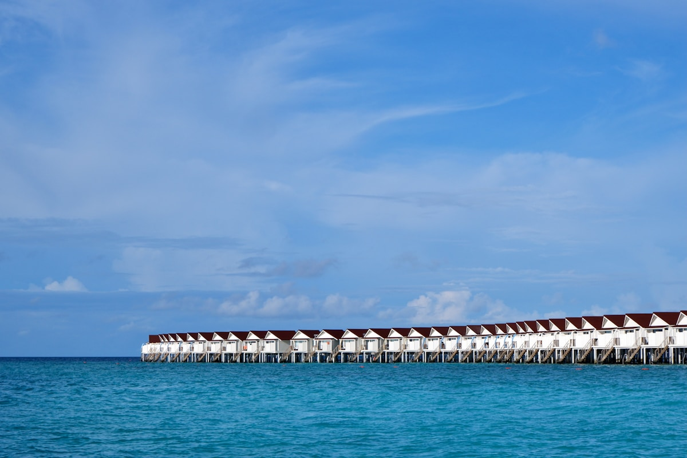
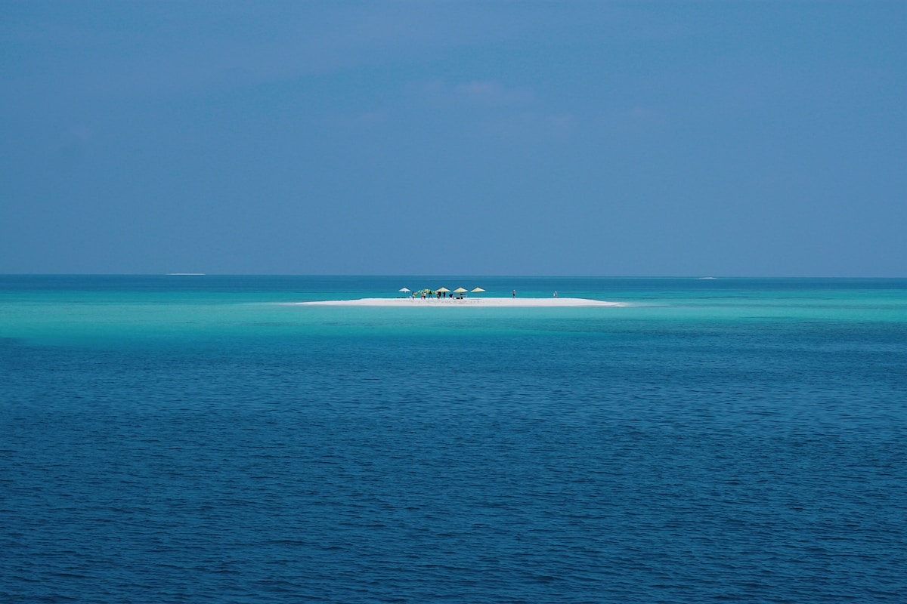
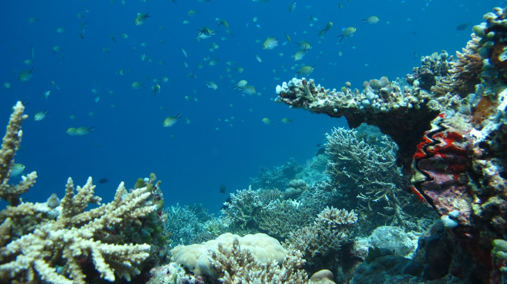
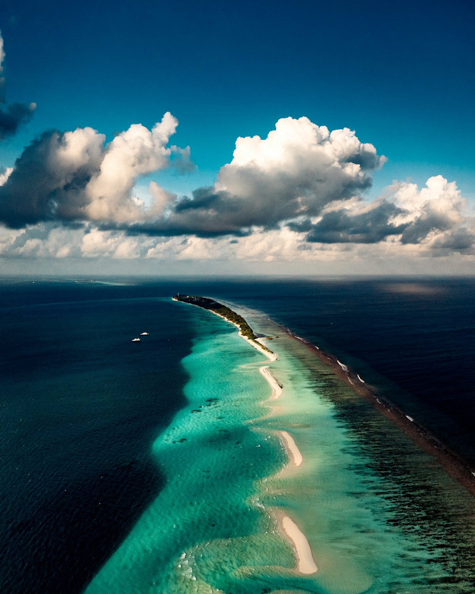
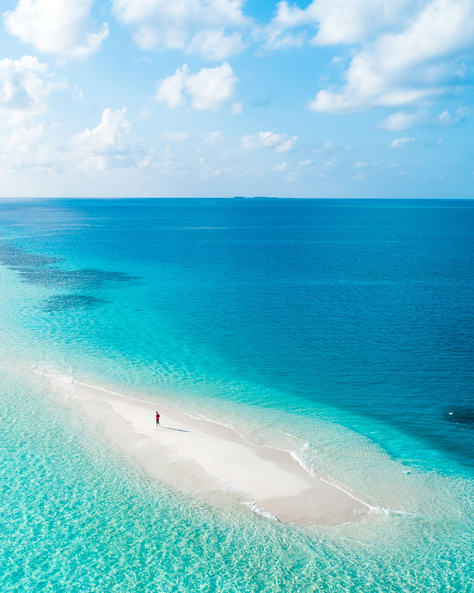
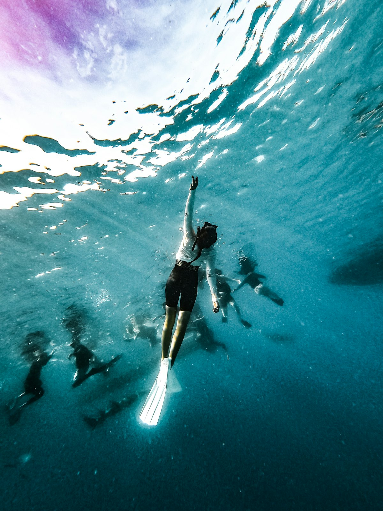
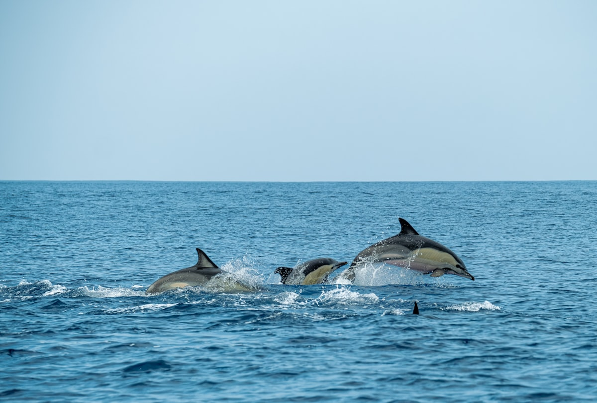
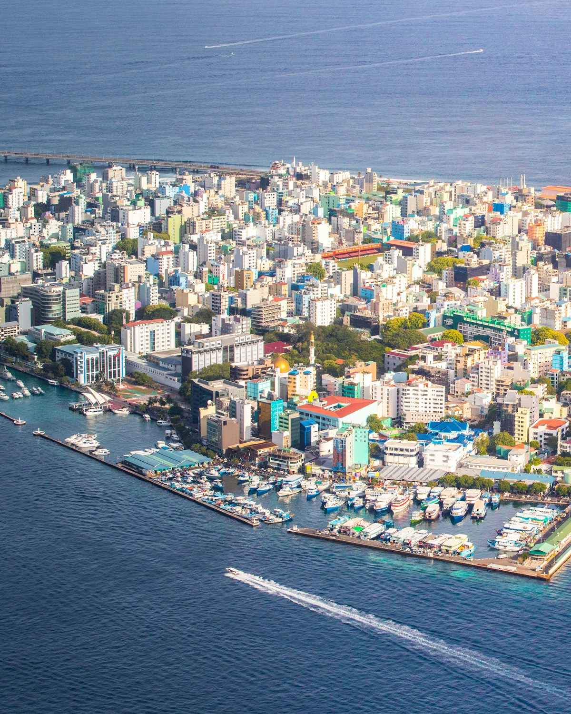

| 事项 | 结论 |
|---|---|
| 事项 | 结论 |
| 签证（最关键） | 中国护照免签落地 30 天：护照有效期 6 个月以上 + 返程机票 + 酒店确认单；行前 96 小时内在线填好 IMUGA 电子入境表，通关 10 分钟 |
| 推荐方案 | 7 天：马累 1 天 → 马富施居民岛 2 天 → 度假岛水屋 3 天 → 返程 1 天 |
| 返程约束 | 首航 JD456 每周三五日 14:45 从马累起飞，返程当天退房后直奔机场，提前 3 小时到 |
| 行程链 | 马累 → 马富施 → 度假岛（水屋）→ 返程 |
| 预算（人均） | 经济 12000–18000 ／ 标准 25000–38000 ／ 舒适 60000–120000（人民币） |
| 三件提前事 | ① 订首航直飞机票 ② 提前订度假岛水屋并确认接驳方式 ③ 行前填 IMUGA 电子入境表 |
| 季节提醒 | 11 月–次年 4 月旱季风浪小最佳；5–10 月雨季水屋便宜 30–50%，浮潜能见度略降 |
| 支付 | 美元几乎通行 + 拉菲亚小额找零（1 美元≈7.2 元）；居民岛小店收现金，度假岛刷卡 |
以下为 7 天 6 晚的推荐节奏：前半段居民岛「玩海」，后半段度假岛「躺平」。每日主景点 ≤2 个，出海项目集中在上午风浪小的时候。
| 日期 | 行程 | 过夜地 | 主题 |
|---|---|---|---|
| D1 抵马累 | 北京✈马累（直飞约 8h40m），快艇/轮渡到马累或机场岛，傍晚鱼市场+海滨步道 | 马累/机场岛 | 抵达+预热 |
| D2 | 快艇上马富施居民岛（约 45min），比基尼海滩浮潜，环岛闲逛+日落沙滩 | 马富施 | 居民岛初体验 |
| D3 | 出海一日游：无人沙洲+鲨鱼湾浮潜+海豚巡航（约 60–80 美元含浮潜装备） | 马富施 | 出海日 |
| D4 | 快艇/水飞上度假岛，入住水屋，泳池+屋外珊瑚礁浮潜 | 度假岛 | 水屋日 |
| D5 | 珊瑚礁浮潜/深潜体验，玻璃船看海底，傍晚日落巡航追海豚 | 度假岛 | 浮潜日 |
| D6 | SPA 放松 + 水下餐厅/半潜艇 + 环礁摄影 | 度假岛 | 休闲日 |
| D7 返程 | 快艇回马累机场，免税店补货，✈北京（JD456 14:45 起飞） | — | 收尾 |
以下为 7 天全程的逐小时执行时间线，可当作「当天打开照着走」的清单。标注 ※ 的可选项视体力与天气取舍。
| 时间 | 事项 |
|---|---|
| 07:10–12:50 | 北京大兴✈马累（首航 JD455，A330 宽体机，约 8h40m）。时差 -3 小时，机上填入境卡或行前在线填 IMUGA 电子入境表 |
| 13:30–15:00 | 出关后到酒店/船公司柜台集合，快艇或公共轮渡前往马累/机场岛 Hulhumale 入住 |
| 15:30–18:00 | 马累市区（免费）：鱼市场+星期五清真寺+海滨大道，感受世界上最小的首都 |
| 18:30 | 晚餐：马累本地餐厅（马尔代夫咖喱、烤鱼、金枪鱼小吃） |
| 时间 | 事项 |
|---|---|
| 08:30–09:30 | 快艇马累→马富施（共享快艇约 20–25 美元，45 分钟），入住居民岛民宿 |
| 10:00–12:00 | 比基尼海滩 Bikini Beach（免费）：马尔代夫唯一允许穿比基尼的公共沙滩，下水浮潜 |
| 12:00–13:30 | 午餐：本地餐馆 kottu / 马尔代夫咖喱鱼汤（Garudhiya） |
| 14:00–17:30 | 环岛漫步 + 租自行车（约 3–5 美元/小时），日落沙滩看夕阳 |
| 18:30 | 夜钓体验（约 20–30 美元）或海边酒吧听浪 |
| 时间 | 事项 |
|---|---|
| 09:00–12:00 | 出海一日游（约 60–80 美元，含浮潜装备+简餐）：第一站无人沙洲 Sandbank，果冻海拍照 |
| 12:00–13:30 | 船上简餐 + 浮潜休息 |
| 14:00–16:00 | 鲨鱼湾 Shark Bay 浮潜（免费）：护士鲨、海龟、珊瑚礁，全程救生衣+向导 |
| 16:30–18:00 | 海豚巡航：成群海豚追着船头跳跃 |
| 19:00 | 回岛晚餐，整理行李准备明天上度假岛 |
| 时间 | 事项 |
|---|---|
| 09:00–11:00 | 快艇马富施→马累机场（约 45min），再转接驳上度假岛；近环礁（北马累环礁）快艇 20–40 分钟即到 |
| 12:00–14:00 | 度假村入住 + 午餐，确认水屋位置与餐饮计划（含早/半食宿/全食宿） |
| 14:30–17:30 | 水屋体验：甲板躺椅、直接下水浮潜，泳池与泻湖拍照 |
| 18:00 | 水屋露台看日落，晚餐度假村主餐厅 |
| 时间 | 事项 |
|---|---|
| 08:30–11:30 | House Reef 珊瑚礁浮潜（免费，装备可在潜店租）：出门就能下海看珊瑚和热带鱼 |
| 12:00–14:00 | 午餐 + 午休 |
| 15:00–17:00 | 玻璃船/半潜艇（约 30–60 美元）：不下水也能看海底珊瑚与鱼群 |
| 17:30–19:00 | 日落巡航追海豚（约 40–80 美元）：海上日落+香槟（可选） |
| 19:30 | 晚餐：度假村主题餐厅（海鲜之夜/亚洲之夜） |
| 时间 | 事项 |
|---|---|
| 09:00–11:00 | 晨泳 + 水屋甲板晒太阳，收拾拍照 |
| 11:00–13:00 | 水下餐厅/水下酒吧（约 150–300 美元）：边用餐边看鱼群环绕，需提前 1 个月预订 |
| 14:00–16:00 | 马尔代夫式 SPA（约 120–250 美元）：椰子精油按摩放松 |
| 16:30–18:00 | 环礁摄影 + 无人机航拍（先确认度假村政策，帕罗机场周边禁飞同理会查） |
| 19:00 | 告别晚餐，整理行李 |
| 时间 | 事项 |
|---|---|
| 08:00–09:00 | 退房，快艇返马累机场（度假村会按航班时间安排船班） |
| 10:00–12:00 | 机场免税店补货：斯里兰卡茶、马尔代夫手工艺品、免税酒（带出海关即可） |
| 12:00–13:30 | 机场午餐 + 值机 |
| 14:45–次日 01:50 | 马累✈北京大兴（JD456），落地入境回家 |
必去（必去）/ 顺路（顺路）/ 可跳过（可跳过）。

必去
顺路
必去
必去
必去
顺路
顺路图片为 Unsplash 主题图（水屋、比基尼海滩、水下餐厅、居民岛、无人沙洲、珊瑚浮潜、海豚、马累清真寺均为马尔代夫实景），用于页面配图。更多免费体验：马累鱼市场、环岛骑行、日出晨泳。
点击左侧节点可在地图上定位；点击地图 marker 会高亮对应节点。坐标为 WGS-84 转 GCJ-02 纠偏后标注。
以下为单人、不含购物的估算，人民币计价；出发地基准北京。汇率按 1 美元 ≈ 7.2 元（拉菲亚与美元挂钩）。往返机票按首航直飞淡季 5000–6500 元计，旺季（12–4 月）上浮明显。
| 项目 | 经济（12000–18000） | 标准（25000–38000） | 舒适（60000–120000） |
|---|---|---|---|
| 往返机票 | 首航直飞 5000–6500 | 旺季/灵活 7000–10000 | 商务舱/转机豪华 15000–25000 |
| 住宿（6 晚） | 机场岛+马富施民宿 300–600/晚 | 马富施+4 星度假村水屋 1500–4000/晚 | 顶奢水屋 8000–30000/晚 |
| 交通（快艇/水飞） | 全程快艇 300–500 | 快艇+水飞往返 1000–2000 | 水飞+专属快艇+内陆机 4000–8000 |
| 餐饮 | 居民岛为主 300–500/天 | 度假村半食宿 600–1000/天 | 全包/米其林级 1500–4000/天 |
| 活动/杂费 | 出海浮潜 300–600 | 潜水+海豚巡航+水下餐厅 1200–2500 | 深潜课程+SPA+水下餐厅+航拍 5000–12000 |
把度假岛拉到 4–5 晚，选带私人泳池的水屋（Anantara、Six Senses 档），加订水下餐厅、落日巡航与双人 SPA。预算整体上浮到 60000 元以上；蜜月套餐通常含鲜花布置、香槟与小礼物，预订时主动向酒店要。
选快艇可达的近环礁度假村（免水飞折腾），优先带儿童俱乐部（Kids Club）与浅滩泻湖的岛；居民岛段可砍掉或减为 1 晚。孩子对沙洲、浮潜、海豚的兴趣远大于水下餐厅，行程以「下海+沙滩」为主即可。
| 方式 | 时长 | 参考价 | 备注 |
|---|---|---|---|
| 直飞（推荐） | 北京大兴✈马累约 8h40m | 往返 5000–7000 元 | 首都航空 JD455/JD456，每周三五日，A330 宽体机 |
| 转机 | 9–13h | 4000–9000 元 | 经上海/广州/新加坡/吉隆坡，新航/亚航/马航，价格浮动大 |
| 其他 | — | — | 国际邮轮可停靠马累，班次极少，行程定制性差 |
| 区域 | 价格/晚 | 优点 | 短板 |
|---|---|---|---|
| 马累/机场岛 Hulhumale | 经济 300–600 / 标准 800–1500 | 落地第一晚方便，转机/晚班机过渡 | 非度假体验，海滩一般 |
| 居民岛·马富施 | 经济 300–600 / 标准 700–1200 | 价格低、出海项目便宜、本地生活 | 无水屋，公共区域禁酒 |
| 度假岛·水屋（近环礁） | 经济 2000–4000 / 标准 6000–12000 | 快艇可达，甲板直接浮潜 | 餐食另计，旺季翻倍 |
| 度假岛·水屋（远环礁） | 标准 8000–15000 / 舒适 20000+ | 顶级珊瑚与私密性，水飞体验 | 需水飞、白天限时，接驳贵 |
| 顶奢（索尼娃/白马等） | 舒适 30000–90000/晚 | 滑梯水屋、管家服务、一价全包 | 预算爆炸，提前半年订 |